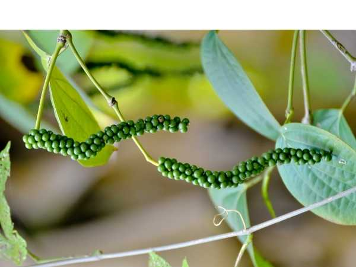

Piper nigrum 'Karimunda'
Common Names: Black Pepper, Karimunda Pepper
Local Name: Milagu (Tamil), Kali Mirch (Hindi), Karimunda Kurumulaku (Malayalam)
Family: Piperaceae
Origin: Kerala, India (traditional landrace variety from Idukki and Wayanad)
Plant Type: Perennial climbing vine
Variety: Karimunda — traditional cultivar, widely grown in Kerala highlands
Average Lifespan: 25–35 years (hardy and long-lived)
| Growth Habit | Moderate-growing perennial woody climber; less vigorous than Panniyur but more resilient |
| Plant Size | 6–10 meters on standard trees; compact growth habit |
| Leaves | Alternate, ovate to broadly ovate, 8–15 cm long, dark green with slightly wavy margins |
| Flowers | Minute, sessile, borne on slender pendulous spikes (catkins) 6–12 cm long |
| Flower Characteristics | Protogynous; predominantly cross-pollinated; spikes shorter and denser than Panniyur |
| Fruit | Small spherical drupes, 3–5 mm diameter; smaller berries but densely packed on spikes |
| Fruit Color | Green when unripe, turning bright red at full maturity; black when sun-dried |
| Seed Characteristics | Single seed per drupe; high piperine and essential oil content giving strong pungency |
| Root System | Strong adventitious roots at nodes; robust root system with good soil grip |
| Climate | Tropical highland; thrives in cool, humid conditions at 600–1200 m elevation |
| Temperature Range | 15–30°C ideal; tolerates cooler nights better than most pepper varieties |
| Rainfall Requirement | 2000–3000 mm annually; adapted to heavy monsoon regions |
| Soil Type | Red laterite, forest loam, or clay loam with good organic content |
| Soil pH Preference | 5.0–6.5 (tolerates more acidic soils than other varieties) |
| Sun Requirement | Partial shade; 40–60% shade from canopy trees preferred |
| Spacing | 2–3 meters between support trees |
| Irrigation Method | Rainfed in high-rainfall areas; supplemental irrigation in summer dry spells |
| Water Requirement | Moderate; more drought-tolerant than hybrid varieties once established |
| Can it Grow in Pots? | Possible in large containers (25+ liters) with support; better suited for garden planting |
| Fertilizer Schedule | Apply NPK (50:50:150 g per vine) in two splits; pre-monsoon and post-monsoon |
| Recommended Organic Fertilizers | FYM (10 kg/vine), neem cake, wood ash, compost; responds well to organic management |
| Pesticide Frequency | Bordeaux mixture 1% spray before and after monsoon; less pest-prone than hybrids |
| Recommended Organic Pesticides | Bordeaux mixture, neem oil, Pseudomonas fluorescens for root health |
| Mulching Practice | Heavy mulching with green leaves, dried grass, or coconut fronds; 15–20 cm thick |
| Training System | Living standards (Erythrina indica, Gliricidia sepium, silver oak) traditional in Kerala |
| Pruning Time | Post-harvest (January–March); shade tree pruning before monsoon onset |
| How to Prune | Remove dead and weak laterals; coil trailing runners back onto support; regulate shade canopy |
| Common Pests | Pollu beetle, pepper lace bug, scale insects, root-knot nematode |
| Common Diseases | Phytophthora foot rot (quick wilt), slow decline, leaf blight, viral stunt disease |
| Disease Prevention & Remedies | Ensure drainage, apply Trichoderma to soil, Bordeaux paste on stem base, remove infected vines |
| Flowering Months | May–July (coinciding with southwest monsoon) |
| Fruiting Season | December–February; 7–8 months after flowering |
| Days to Harvest | 210–240 days from flowering; first crop from 3rd–4th year |
| Harvest Indicators | 1–2 berries per spike turning yellow-red; harvest when majority still green for black pepper |
| Average Yield per Plant | 1–3 kg dry pepper per vine per year; lower yield but consistent and reliable |
| Pollination Type | Self-pollination and wind-assisted cross-pollination |
| Pollination Notes | Rain splash and gravity aid pollen transfer; good fruit set even in heavy monsoon conditions |
| Pollination Details | Predominantly self-pollinated; protogynous flowers allow some cross-pollination |
| Propagation by Seeds | Seeds viable but produce variable offspring; not preferred for commercial planting |
| Propagation by Cuttings | Runner shoot cuttings (2–3 nodes) in polybags; roots in 40–60 days; preferred method |
| Propagation by Grafting | Not practiced; serpentine layering used for rapid multiplication of planting material |
| Water Usage | Low to moderate; well-adapted to rainfed conditions in Western Ghats |
| Soil Conservation Practices | Grown in multi-tier agroforestry systems; shade trees and mulch prevent hillside erosion |
| Organic Practices Used | Traditional organic cultivation; FYM, green manuring, biological pest control |
| Companion Plants | Arecanut, coconut, coffee, cardamom in traditional Kerala homegardens |
| Biodiversity Benefits | Part of traditional homestead agroforestry; supports rich biodiversity in Western Ghats |
| Commercial Production Regions | Idukki, Wayanad, Kannur districts of Kerala; Coorg in Karnataka |
| Market Uses | Premium black pepper, white pepper; valued for strong pungency and aroma |
| Processing Uses | Whole pepper, ground pepper, oleoresin extraction; preferred for quality blends |
| Market Value (Approx.) | ₹500–800 per kg (dry); commands premium over hybrid varieties for flavor |
| Symbolism | Represents Kerala's spice heritage; Karimunda means "dark-faced" referring to the dark mature berries |
| Traditional Uses | Integral to Kerala cuisine and Ayurvedic preparations; used in traditional Kashayam (herbal decoctions) |
| Anxiety & Sleep | Warm pepper milk (milagu paal) is a traditional remedy for cold and restful sleep |
| Immune Support | High piperine content boosts bioavailability of nutrients; traditional cold and flu remedy |
| Anti-inflammatory Properties | Piperine exhibits anti-inflammatory and antioxidant effects in research studies |
| Heart Health | Supports circulation; used in traditional medicine to improve blood flow |
| Digestive Health | Stimulates hydrochloric acid secretion; carminative; key ingredient in Trikatu churnam |
Disclaimer: Information provided is for educational purposes only and not a substitute for medical advice.
Add your field observations here.